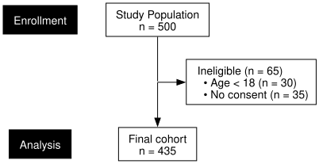
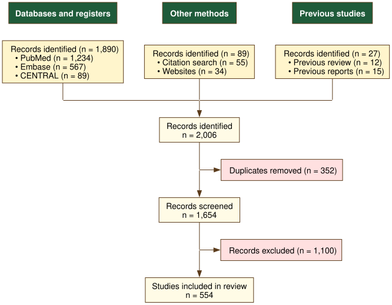
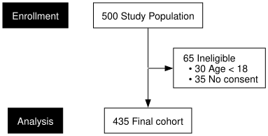
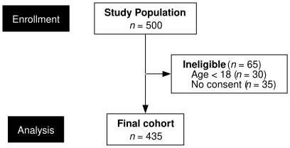
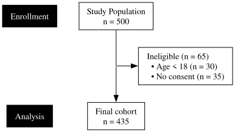
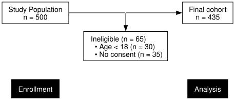

The default rendering engine in selecta uses R’s
grid graphics system to produce publication-quality PDF,
PNG, SVG, and TIFF output. For applications requiring web embedding or
integration with graph-manipulation tools, selecta also
supports export to the Graphviz DOT language. The resulting DOT strings
can be rendered with the DiagrammeR
package or any Graphviz-compatible tool.
n.b.: The diagrams in this vignette are rendered through the system Graphviz binary (
dot) when available, providing reliable support for all Graphviz attributes (includingsplines=orthofor right-angle edges). When the binary is not available, the vignette falls back toDiagrammeR::grViz(), which produces embeddable HTML widgets but may silently drop some Graphviz directives.
Preliminaries
The DOT engine is available through the engine argument
of flowchart() and plot(). No additional
packages are required to generate DOT strings; however, rendering them
as an HTML widget requires DiagrammeR:
Generating DOT Output
Example 1: Basic DOT String
The engine = "dot" argument causes
flowchart() to return a character string in the Graphviz
DOT language rather than drawing to a graphics device:
example1 <- enroll(n = 500) |>
phase("Enrollment") |>
exclude("Ineligible", n = 65,
reasons = c("Age < 18" = 30, "No consent" = 35),
included_label = "Eligible") |>
phase("Analysis") |>
endpoint("Final cohort")
dot_str <- flowchart(example1, engine = "dot")
dot_str
#> [1] "digraph selecta {\n rankdir=TB;\n splines=ortho;\n concentrate=false;\n nodesep=0.500;\n ranksep=0.400;\n node [shape=box, style=filled, fontname=\"Helvetica\", fontsize=14, margin=\"0.194,0.083\", color=\"black\"];\n PL1 [label=\"Enrollment\", shape=box, style=\"filled\", fillcolor=\"#000000\", fontcolor=\"#FFFFFF\", color=\"#000000\", group=\"phase_labels\"];\n PL2 [label=\"Analysis\", shape=box, style=\"filled\", fillcolor=\"#000000\", fontcolor=\"#FFFFFF\", color=\"#000000\", group=\"phase_labels\"];\n PL1 -> PL2 [style=invis, weight=100];\n n1 [label=\"Study Population\\nn = 500\", fillcolor=\"#FFFFFF\", group=\"trunk\"];\n n2 [label=\"Ineligible (n = 65)\\l • Age < 18 (n = 30)\\l • No consent (n = 35)\\l\", fillcolor=\"#FFFFFF\"];\n n3 [label=\"Final cohort\\nn = 435\", fillcolor=\"#FFFFFF\", group=\"trunk\"];\n P1 [shape=point, width=0, style=invis] [group=\"trunk\"];\n n1 -> P1 [arrowhead=none, color=\"black\"];\n P1 -> n2 [color=\"black\"];\n subgraph { rank=same; rankdir=LR; P1; n2; }\n P1 -> n3 [color=\"black\"];\n subgraph { rank=same; rankdir=LR; PL1; n1; }\n subgraph { rank=same; rankdir=LR; PL2; n3; }\n}"
The DOT string defines a directed graph (digraph) with
one node per diagram box and one edge per flow or exclusion arrow.
Example 2: Multi-Arm Trial (CONSORT)
The DOT engine supports more complex split diagram types, including multi-arm trials with per-arm exclusions:
example2 <- enroll(n = 1200, label = "Assessed for eligibility") |>
phase("Enrollment") |>
exclude("Excluded", n = 300,
reasons = c("Not meeting criteria" = 160,
"Declined" = 90, "Other" = 50)) |>
phase("Allocation") |>
allocate(labels = c("Drug A", "Placebo"), n = c(450, 450)) |>
phase("Follow-up") |>
exclude("Lost to follow-up", n = c(20, 20)) |>
phase("Analysis") |>
endpoint("Analyzed")
dot_2arm <- flowchart(example2, engine = "dot")
cat(dot_2arm)
#> digraph selecta {
#> rankdir=TB;
#> splines=ortho;
#> concentrate=false;
#> nodesep=0.500;
#> ranksep=0.400;
#> node [shape=box, style=filled, fontname="Helvetica", fontsize=14, margin="0.194,0.083", color="black"];
#> PL1 [label="Enrollment", shape=box, style="filled", fillcolor="#000000", fontcolor="#FFFFFF", color="#000000", group="phase_labels"];
#> PL2 [label="Allocation", shape=box, style="filled", fillcolor="#000000", fontcolor="#FFFFFF", color="#000000", group="phase_labels"];
#> PL3 [label="Follow-up", shape=box, style="filled", fillcolor="#000000", fontcolor="#FFFFFF", color="#000000", group="phase_labels"];
#> PL4 [label="Analysis", shape=box, style="filled", fillcolor="#000000", fontcolor="#FFFFFF", color="#000000", group="phase_labels"];
#> PL1 -> PL2 [style=invis, weight=100];
#> PL2 -> PL3 [style=invis, weight=100];
#> PL3 -> PL4 [style=invis, weight=100];
#> n1 [label="Assessed for eligibility\nn = 1,200", fillcolor="#FFFFFF", group="trunk"];
#> n2 [label="Excluded (n = 300)\l • Not meeting criteria (n = 160)\l • Declined (n = 90)\l • Other (n = 50)\l", fillcolor="#FFFFFF"];
#> n3 [label="Randomized\nn = 900", fillcolor="#FFFFFF", group="trunk"];
#> n4 [label="Drug A\nn = 450", fillcolor="#FFFFFF", width=1.091, group="arm_1"];
#> n5 [label="Placebo\nn = 450", fillcolor="#FFFFFF", width=1.091, group="arm_2"];
#> n6 [label="Lost to follow-up (n = 20)\l", fillcolor="#FFFFFF"];
#> n7 [label="Lost to follow-up (n = 20)\l", fillcolor="#FFFFFF"];
#> n8 [label="Analyzed\nn = 430", fillcolor="#FFFFFF", group="arm_1"];
#> n9 [label="Analyzed\nn = 430", fillcolor="#FFFFFF", group="arm_2"];
#> P1 [shape=point, width=0, style=invis] [group="arm_1"];
#> P2 [shape=point, width=0, style=invis] [group="arm_2"];
#> n4 -> P1 [arrowhead=none, color="black", weight=100];
#> P1 -> n8 [color="black", weight=100];
#> n5 -> P2 [arrowhead=none, color="black", weight=100];
#> P2 -> n9 [color="black", weight=100];
#> n6 -> P1 [dir=back, color="black"];
#> P2 -> n7 [color="black"];
#> P1 -> P2 [style=invis];
#> subgraph { rank=same; rankdir=LR; n6; P1; P2; n7; }
#> P3 [shape=point, width=0, style=invis] [group="trunk"];
#> n1 -> P3 [arrowhead=none, color="black"];
#> P3 -> n2 [color="black"];
#> subgraph { rank=same; rankdir=LR; P3; n2; }
#> P3 -> n3 [color="black"];
#> P4 [shape=point, width=0, style=invis] [group="arm_1"];
#> P5 [shape=point, width=0, style=invis] [group="arm_2"];
#> P6 [shape=point, width=0, style=invis] [group="trunk"];
#> P4 -> P6 -> P5 [arrowhead=none, color="black"];
#> n3 -> P6 [arrowhead=none, color="black", weight=20];
#> P4 -> n4 [color="black"];
#> P5 -> n5 [color="black"];
#> subgraph { rank=same; rankdir=LR; P4; P6; P5; }
#> subgraph { rank=same; rankdir=LR; PL1; n1; }
#> subgraph { rank=same; rankdir=LR; PL2; n3; }
#> subgraph { rank=same; rankdir=LR; PL3; n6; }
#> subgraph { rank=same; rankdir=LR; PL4; n8; n9; }
#> }
Example 3: Systematic Review (PRISMA)
The DOT engine also handles converging multi-source diagrams. To stay consistent with the grid engine, source boxes use a white fill and source-column headers use a darker gray fill with bold black text; exclusion side boxes remain light gray.
example3 <- sources(
previous = c("Previous review" = 12, "Previous reports" = 15),
databases = c("PubMed" = 1234, "Embase" = 567, "CENTRAL" = 89),
other = c("Citation search" = 55, "Websites" = 34),
headers = c(previous = "Previous studies",
databases = "Databases and registers",
other = "Other methods")
) |>
combine("Records identified", n = 2006) |>
exclude("Duplicates removed", n = 352,
included_label = "Records screened") |>
exclude("Records excluded", n = 1100) |>
endpoint("Studies included in review")
dot_prisma <- flowchart(example3, engine = "dot")
cat(dot_prisma)
#> digraph selecta {
#> rankdir=TB;
#> splines=ortho;
#> concentrate=false;
#> nodesep=0.500;
#> ranksep=0.400;
#> node [shape=box, style=filled, fontname="Helvetica", fontsize=14, margin="0.194,0.083", color="black"];
#> n1 [label="Previous studies", fillcolor="#D0D0D0", fontcolor="black", fontname="Helvetica-Bold", group="src_previous"];
#> n2 [label="Records identified (n = 27)\l • Previous review (n = 12)\l • Previous reports (n = 15)\l", fillcolor="#FFFFFF", group="src_previous"];
#> n3 [label="Databases and registers", fillcolor="#D0D0D0", fontcolor="black", fontname="Helvetica-Bold", group="src_databases"];
#> n4 [label="Records identified (n = 1,890)\l • PubMed (n = 1,234)\l • Embase (n = 567)\l • CENTRAL (n = 89)\l", fillcolor="#FFFFFF", group="src_databases"];
#> n5 [label="Other methods", fillcolor="#D0D0D0", fontcolor="black", fontname="Helvetica-Bold", group="src_other"];
#> n6 [label="Records identified (n = 89)\l • Citation search (n = 55)\l • Websites (n = 34)\l", fillcolor="#FFFFFF", group="src_other"];
#> n7 [label="Records identified\nn = 2,006", fillcolor="#FFFFFF", group="trunk"];
#> n8 [label="Duplicates removed (n = 352)\l", fillcolor="#FFFFFF"];
#> n9 [label="Records screened\nn = 1,654", fillcolor="#FFFFFF", group="trunk"];
#> n10 [label="Records excluded (n = 1,100)\l", fillcolor="#FFFFFF"];
#> n11 [label="Studies included in review\nn = 554", fillcolor="#FFFFFF", group="trunk"];
#> P1 [shape=point, width=0, style=invis] [group="trunk"];
#> n7 -> P1 [arrowhead=none, color="black"];
#> P1 -> n8 [color="black"];
#> subgraph { rank=same; rankdir=LR; P1; n8; }
#> P1 -> n9 [color="black"];
#> P2 [shape=point, width=0, style=invis] [group="trunk"];
#> n9 -> P2 [arrowhead=none, color="black"];
#> P2 -> n10 [color="black"];
#> subgraph { rank=same; rankdir=LR; P2; n10; }
#> P2 -> n11 [color="black"];
#> P3 [shape=point, width=0, style=invis] [group="src_databases"];
#> P4 [shape=point, width=0, style=invis] [group="src_other"];
#> P5 [shape=point, width=0, style=invis] [group="src_previous"];
#> n4 -> P3 [arrowhead=none, color="black"];
#> n6 -> P4 [arrowhead=none, color="black"];
#> n2 -> P5 [arrowhead=none, color="black"];
#> P3 -> P4 -> P5 [arrowhead=none, color="black"];
#> P4 -> n7 [color="black"];
#> subgraph { rank=same; rankdir=LR; P3; P4; P5; }
#> n1 -> n2 [style=invis, weight=100];
#> n3 -> n4 [style=invis, weight=100];
#> n5 -> n6 [style=invis, weight=100];
#> { rank=same; n1; n3; n5; }
#> }
Customizing DOT Output
Because the DOT string is plain text, it can be modified before
rendering. This enables customization beyond what
flowchart() exposes directly.
Example 4: Changing Node Colors
The DOT engine accepts the same coloring parameters as the grid engine, plus three parameters specific to multi-source diagrams. The example below recolors a PRISMA-style flow with a warm palette and switches the source-header text to white for contrast against a dark header fill:
dot_palette <- flowchart(example3, engine = "dot",
box_fill = "#fffbe6", # warm cream
side_fill = "#ffe0e0", # light pink
source_fill = "#fff5cc", # pale yellow
source_header_fill = "#1f5b3a", # dark green
source_header_text = "#ffffff", # white text
border_col = "#5a3a1a", # warm brown
arrow_col = "#5a3a1a")
The full set of DOT color parameters is:
| Parameter | Applies to | Default |
|---|---|---|
box_fill |
Main flow boxes (enrollment, allocation, endpoint) | "#FFFFFF" |
side_fill |
Side (exclusion) boxes | "#F0F0F0" |
border_col |
Border color for all boxes | "black" |
arrow_col |
Connector arrows and edge labels | "black" |
source_fill |
Source boxes (PRISMA, MOOSE) | "#FFFFFF" |
source_header_fill |
Source-column header fill | "#D0D0D0" |
source_header_text |
Source-column header text | "black" |
The grid engine’s phase_fill and
phase_text_col have no effect on DOT output, which does not
render the vertical phase strips.
Example 5: Count-First Layout
The DOT engine accepts the same count_first = TRUE
argument as the grid engine, producing the compact label format in which
the count leads:
dot_cf <- flowchart(example1, engine = "dot", count_first = TRUE)
By default each label spans two lines—the descriptive text, then
n = <count>. The count_first flag
collapses this to a single leading-count line. Both layouts respect the
number_format setting for locale-aware count
formatting.
Example 6: Rich (HTML) Formatting
For diagrams where inline italic n and bold label text are
essential, formatting = "rich" switches to Graphviz’s
HTML-like label syntax: the descriptive line renders in bold and the
lowercase n in “n = X” renders in italic, matching the grid
engine and published EQUATOR diagrams:
dot_rich <- flowchart(example1, engine = "dot", formatting = "rich")
Example 7: Times Typography
Either formatting mode accepts an alternative
font_family. Times-Roman suits environments where Helvetica
is unavailable or where serif typography fits the surrounding document.
Pair it with sans_serif = FALSE on
render_dot() to retain the Times face rather than
substituting the cross-platform sans-serif chain:
dot_times <- flowchart(example1, engine = "dot",
font_family = "Times-Roman")
Example 8: Adding Graphviz Attributes
When a needed adjustment has no dedicated parameter, the DOT string
can be edited as plain text before rendering. Because the returned value
is just text, gsub() reaches anything Graphviz understands.
For example, to change the overall graph direction from top-to-bottom to
left-to-right:
dot_lr <- gsub("rankdir=TB", "rankdir=LR", dot_str)
This is the most ad hoc of the customization routes: it
bypasses the layout pass, so it is reliable for attributes that do not
affect box sizing (direction, edge style, background) but unsuitable for
anything that does. The font in particular is best changed through
font_family (Example 7) rather than string substitution,
since box widths are measured from font-specific metrics before
rendering.
Font Formatting Notes
The DOT engine sizes every box before handing the graph to Graphviz,
measuring label widths from embedded Adobe Font Metric (AFM) tables.
Tables ship for Helvetica, Times-Roman, and Courier; other font names
fall back to the Helvetica tables, which work well for similar
sans-serif faces such as Arial, Liberation Sans, and DejaVu Sans. For
this reason, the font is best set through font_family
rather than by editing the generated DOT: changing the name without
re-running the measurement pass produces mis-sized boxes.
Plain formatting (the default) uses Graphviz’s standard text path,
which centers labels reliably and aligns identically across rendering
backends. Source-column headers still receive a bold face through the
per-node fontname attribute (Helvetica-Bold,
Times-Bold, or Courier-Bold to match the body
font), so the header emphasis survives without invoking HTML labels.
Rich formatting (Example 6) opts into Graphviz’s HTML-like labels for
inline bold and italic; box widths are then measured with a
trailing-whitespace centering correction that yields sub-pixel centering
for Helvetica and exact centering for Times. Other fonts may show slight
residual drift under rich formatting, so plain formatting remains the
safer default for them.
The plot() Method
The S3 plot() method dispatches to
flowchart() and accepts the same engine
argument:
This provides a convenient shorthand for interactive use.
Bullets vs. Indentation
Left-aligned breakdowns inside side and source boxes—the sub-reasons
of an exclude() step, whether flat or nested, and the
per-source counts of a PRISMA flow—are prefixed with a bullet under
plain formatting, where indentation alone barely separates a sub-item
from its parent. Passing bullets = FALSE removes the
prefixes and relies on indentation; bullets = TRUE forces
them on under rich formatting, whose bold parent labels otherwise carry
the hierarchy unaided. The default, bullets = NULL, selects
per mode.
Saving to File
The flowsave() function accepts
engine = "dot", piping the diagram through the system
Graphviz binary and bypassing R’s graphics devices. This requires
dot on the system PATH; the function raises an
error otherwise. Output format follows the file extension—PDF, PNG, SVG,
TIFF, or .dot (the raw source). The
count_first, number_format,
ortho, bullets, formatting,
font_family, and padding_pt arguments accepted
by flowchart() are forwarded:
# SVG with cross-platform sans-serif rendering (default)
flowsave(example1, "consort.svg", engine = "dot")
# PDF output (Helvetica baked into the file at render time)
flowsave(example1, "consort.pdf", engine = "dot")
# PNG output at a requested DPI
flowsave(example1, "consort.png", engine = "dot", dpi = 300)
# Raw DOT source for downstream editing or external tools
flowsave(example1, "consort.dot", engine = "dot")By default (sans_serif = TRUE), SVG output is
post-processed to expand Graphviz’s single-name font-family
into a cross-platform fallback chain
(Helvetica, Arial, 'Liberation Sans', 'DejaVu Sans', sans-serif),
so the displayed face resolves to the platform’s native sans-serif.
Setting sans_serif = FALSE retains Graphviz’s emitted
typography, which is appropriate when consistency with PDF output
(always rendered in the layout font) matters more than rendering
portability:
flowsave(example1, "consort.svg", engine = "dot",
font_family = "Times-Roman", sans_serif = FALSE)Advanced Rendering Options
The DiagrammeR::grViz() function renders a DOT string as
an HTML widget. In RStudio, this displays in the Viewer pane; in R
Markdown documents, it renders inline:
library(DiagrammeR)
grViz(dot_str)The widget embeds in HTML output, but its content is a static SVG:
nodes are not clickable and carry no hover tooltips unless
tooltip= / URL= attributes are added to the
DOT first. Emitting those attributes from the DOT engine directly is a
planned feature (see the development roadmap).
Saving as HTML
These HTML widgets can be saved as self-contained HTML files using
htmlwidgets::saveWidget():
widget <- DiagrammeR::grViz(dot_str)
htmlwidgets::saveWidget(widget, "consort_diagram.html", selfcontained = TRUE)Saving as PNG
Static image export requires the webshot2 package, which
captures the rendered HTML widget as a screenshot:
tmp <- tempfile(fileext = ".html")
htmlwidgets::saveWidget(DiagrammeR::grViz(dot_str), tmp, selfcontained = TRUE)
webshot2::webshot(tmp, file = "consort_diagram.png",
vwidth = 800, vheight = 1000, delay = 0.5)Choosing Between Engines
Both engines render the full range of topologies—single-stream, parallel-arm, source convergence, split-and-recombine, and factorial—together with phase labels and hierarchical exclusion reasons. The choice between them is primarily one of layout philosophy:
| Feature | engine = "grid" |
engine = "dot" |
|---|---|---|
flowchart() output |
Draws to the graphics device | Returns a DOT-language string |
flowsave() formats |
PDF, PNG, SVG, TIFF | PDF, PNG, SVG, TIFF, .dot
|
| Rendering tool | Base R (grid) |
System Graphviz (dot), or DiagrammeR |
| Layout | Inch-precise, hand-calibrated | Automatic Graphviz layout |
| Phase labels | Colored vertical strips | Left-margin band labels |
| Exclusion sub-reasons | Indented text | Bulleted or indented (bullets) |
| Factorial / nested reasons | Supported | Supported |
| Orthogonal routing | Always orthogonal | Orthogonal by default (ortho = FALSE to
disable) |
| Interactivity | Static | Static (binary) or HTML widget (DiagrammeR) |
The grid engine is recommended for manuscript figures,
where inch-precise dimensional control, colored phase strips, and
publication-quality typography matter; its layout is the calibration
reference against which the DOT engine is tuned. The dot
engine delegates layout to Graphviz, which suits rapid iteration,
web-based reports, and pipelines that consume or post-process the DOT
source; its automatic layout also accommodates very wide or deeply
nested diagrams without manual dimensioning.
Further Reading
- Enrollment Diagrams: CONSORT, STROBE, and STARD diagrams with permanent parallel arms
- Systematic Reviews: PRISMA and MOOSE diagrams with top-level source convergence
- Split-and-Recombine Diagrams: Hybrid topologies for screening validation and exposure classification
- Advanced Workflows: Factorial (nested-split) designs and hierarchical exclusion reasons